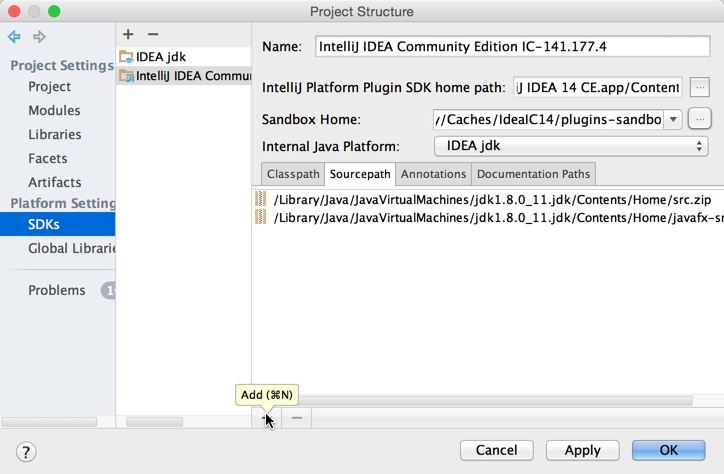

Setting Up a Development Environment
Preliminary Steps
Use the following checklist to ensure that you are ready to develop your custom plugins.
- Get IntelliJ IDEA CE source code on your local computer. Getting IntelliJ IDEA CE source code is not a requirement for plugin development, but having it makes debugging your plugins much easier. For detailed instructions refer to the Getting IntelliJ IDEA Community Edition Source Code section of Check Out And Build Community Edition. Note that building IntelliJ IDEA CE from source code is not required for plugin development.
- Plugin DevKit plugin must be enabled in IntelliJ IDEA
- IntelliJ Platform SDK must be configured for your IDEA project. For more information, see below.
Configuring IntelliJ Platform SDK
To set up your plugin development environment:
-
Create a new IntelliJ Platform SDK under File | Project Structure:

- Specify the installation folder of IntelliJ IDEA Community Edition as the home directory.

-
Select 1.8 as the default Java SDK. See the IntelliJ Build Configuration section of Check Out And Build Community Edition for instructions about creating 1.8 Java SDK.
-
In the Sourcepath tab of the SDK settings, click the Add button:

-
Specify the source code directory for the IntelliJ IDEA Community Edition:
-
Specify the Sandbox Home directory.
The Sandbox Home directory stores the settings of the IDE development instance launched from a Plugin Project’s Run configuration. Shown below is the default Sandbox Home directory for a user on Mac OS X. Any directory can be chosen as the Sandbox Home location. Use the ellipsis button (shown below) to define a custom location.See the IDE Development Instances page for more information about default Sandbox Home directory locations and contents.